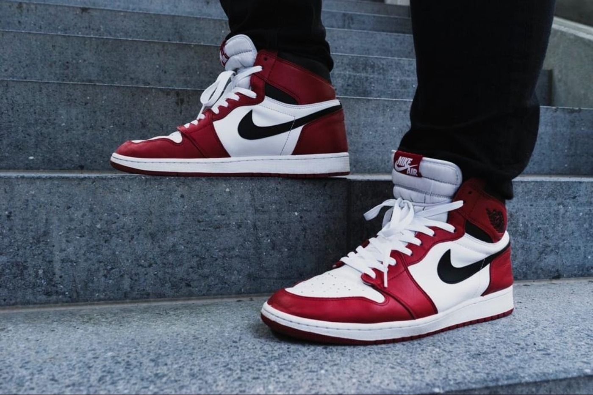
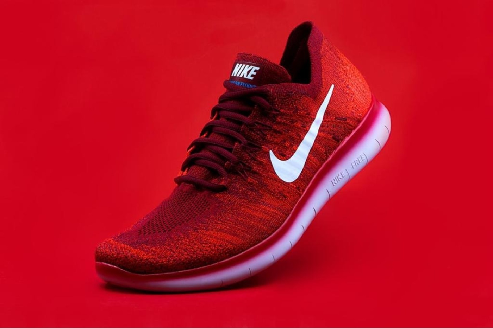
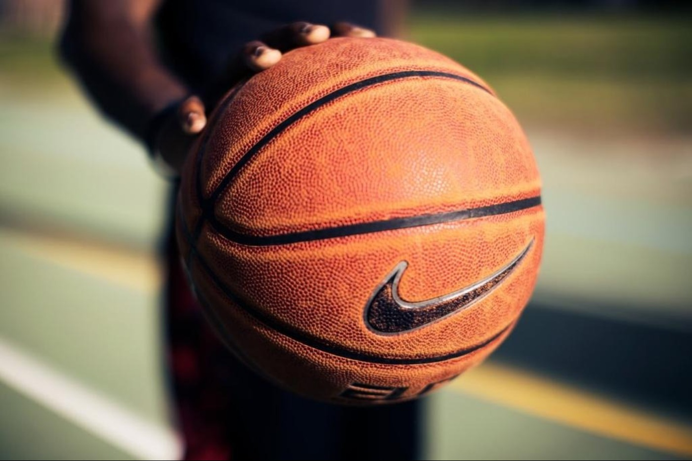

Nike
 Adal Sultangerey ( Journalist )
April 5, 2020
Adal Sultangerey ( Journalist )
April 5, 2020
Nike company known by their quality shoes; supplying equipment and gear for many professional and collegiate athletic teams; and making a ton of money. But where the company truly excels is its marketing? Nobody does branding quite like Nike. I would be shocked if there is a single person reading this article who hasn’t heard of Nike; in fact, most of you probably own at least one Nike product
It was founded in 1964 as Blue Ribbon Sports by Bill Bowerman, a track-and-field coach at the University of Oregon, and his former student Phil Knight. They opened their first retail outlet in 1966 and launched the Nike brand shoe in 1972. The company was renamed Nike, Inc., in 1978 and went public two years later.

Why Nike is still King of Branding?
Association with the biggest names
What kind of shoes did Michael Jordan make extremely popular? Most people know the answer is Air Jordans, which regularly sell for hundreds of dollars and yet still have people lining up to purchase them. But did you know Air Jordan is owned by Nike? The company locked up His Airness in 1984 and has never let him go. Aside from the greatest basketball player of all time, Nike has also made deals with Tiger Woods (the greatest golfer of his generation), Derek Jeter (essentially the face of baseball since 2000), and Cristiano Ronaldo (one of the world’s most famous athletes). And the company always makes sure to lock up the “next big thing” early: Woods’ heir apparent as the world’s best golfer, Rory McIlroy, signed a 10-year, $200+ million sponsorship deal with Nike in 2013.
The messaging is unfailingly consistent
Don’t even pretend you don’t know Nike’s slogan: Just do it. It’s been the same for nearly 30 years, and the logo (the Nike “swoosh”) has been around even longer than that. And despite the fact that Nike co-founder and chairman Phil Knight admitted he “didn’t love” the swoosh in the beginning, he stuck with it. It is now one of the most easily recognized logos in the world, even being used in a silly anachronistic manner in the 2001 film A Knight’s Tale.
Understanding how to make an impression
Many established companies have rather timid advertising campaigns, preferring to rest on their laurels and history of success. Nike is not one of those companies. Instead, it’s constantly tinkering, innovating and pushing the envelope to create campaigns people will talk about. From Nike’s early success with commercials featuring Mars Blackmon proclaiming “It’s gotta’ be the shoes!” to the brutally honest black and white ad showing an emotional Tiger Woods being chastised by his father, Nike has never been afraid to take chances with its ad campaigns. The company makes commercials you don’t forget.



That’s how giant corporation, which includes several dozen successful brands, began with the student’s ambitious idea to change the world. And he succeeded - thanks to his constant fidelity to sports traditions, continuous improvement of technology, a love of innovation and an unquenchable fighting spirit.